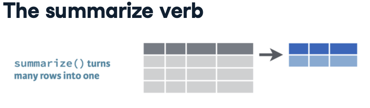
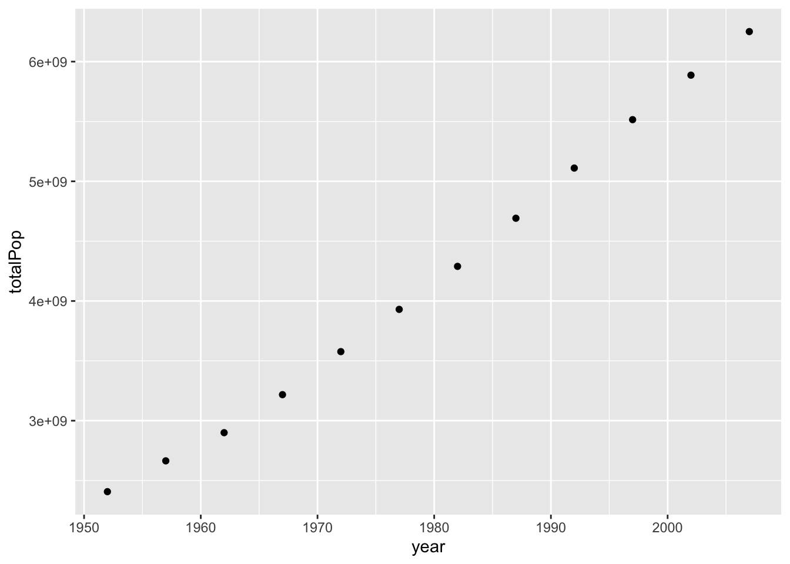
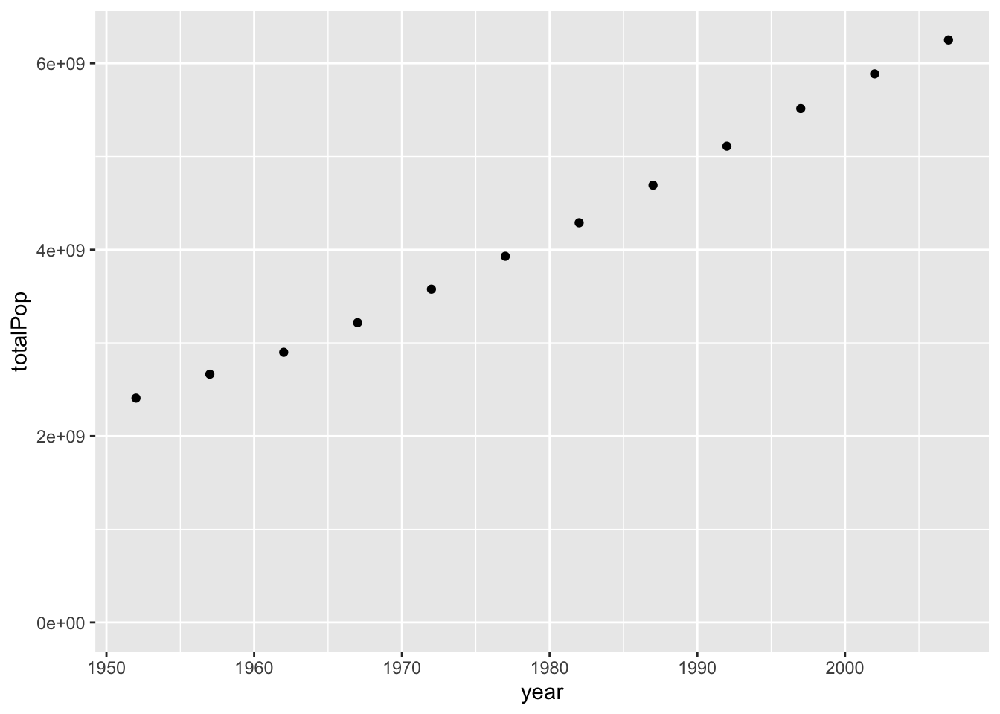
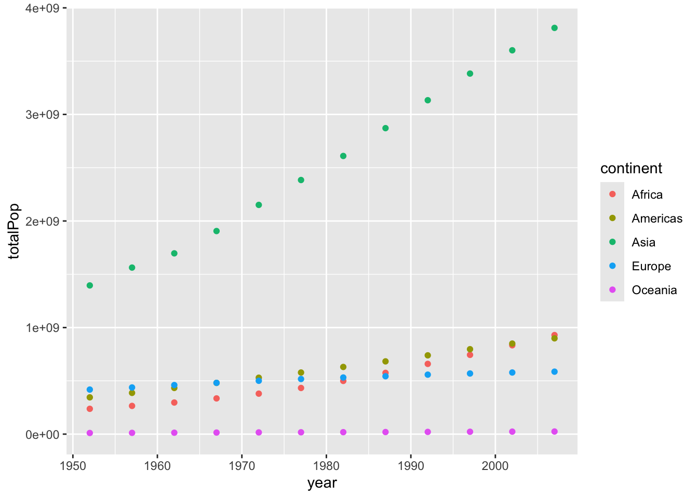
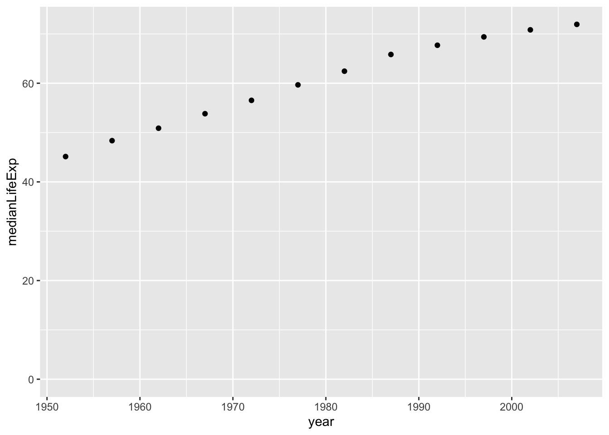
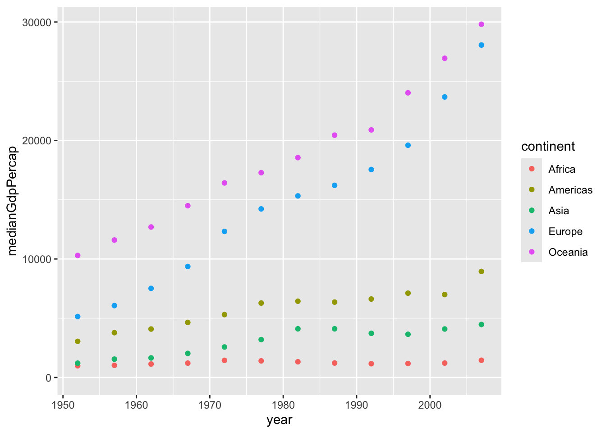
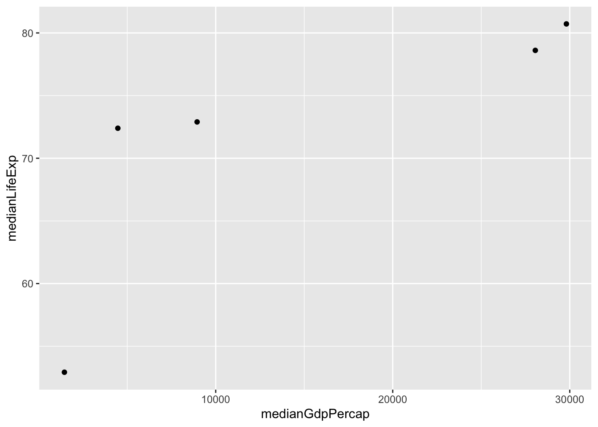

In this chapter, you’ll return to the topic of data transformation with dplyr to learn more ways to explore your data.
You’ve learned to use the extracting data using filter verb to pull out individual observations, such as statistics for the United States in 2007. Now you’ll learn how to summarize many observations into a single data point.

The summarize verb
The summarize verb
Suppose you want to know the average life expectancy across all countries and years in the dataset. You would do this with the summarize verb. Take your gapminder data, pipe it into summarize, and specify that you’re creating a summary column called meanLifeExp. The “mean parentheses lifeexp end parentheses” there is worth examining. This is calling the function mean on the variable lifeExp. The mean function takes the average of a set of values, and R comes with many built-in functions like this. Notice that summarize collapses the entire table down into one row. In the output, we see the answer to our question: the mean life expectancy was about 59.47 years. If you think about it, it doesn’t really make sense to summarize across all countries and across all years. It may make more sense to ask questions about averages in a particular year, such as 2007.
To answer this, you can combine the summarize verb with filter: filter your data for a particular year first, then summarize the result. This shows you that the average life expectancy in the year 2007 was about 67 years. You can create multiple summaries at once with the summarize verb.
For example, suppose that along with finding the average life expectancy in 2007, you want to find the total population in that year. To do that, you add a comma after the mean of the life expectancy, and specify another column that you’re creating. You could give it a useful name like totalPop, and say that it’s equal to the sum- that’s another built-in function- of the pop variable.
mean and sum are just two of the built-in functions you could use to summarize a variable within a dataset.
Another example is median: the median represents the point in a set of numbers where half the numbers are above that point and half of the numbers are below.
Two others are min, for minimum, and max, for maximum. In the exercises, you’ll use several of these functions.
Exercise: Summarizing the median life expectancy
You’ve seen how to find the mean life expectancy and the total population across a set of observations, but mean() and sum() are only two of the functions R provides for summarizing a collection of numbers. Here, you’ll learn to use the median() function in combination with summarize().
Instructions
Use the median() function within a summarize() to find the median life expectancy. Save it into a column called medianLifeExp.
# A tibble: 1 × 1
medianLifeExp
<dbl>
1 60.7
Answer
library(gapminder)library(dplyr)# Summarize to find the median life expectancygapminder%>%summarize(medianLifeExp =median(lifeExp))
# A tibble: 1 × 1
medianLifeExp
<dbl>
1 60.7
Exercise: Summarizing the median life expectancy in 1957
Rather than summarizing the entire dataset, you may want to find the median life expectancy for only one particular year. In this case, you’ll find the median in the year 1957.
Instructions
Filter for the year 1957, then use the median() function within a summarize() to calculate the median life expectancy into a column called medianLifeExp.
Answer
library(gapminder)library(dplyr)# Filter for 1957 then summarize the median life expectancygapminder%>%filter(year ==1957)%>%summarize(medianLifeExp =median(lifeExp))
# A tibble: 1 × 1
medianLifeExp
<dbl>
1 48.4
Exercise: Summarizing multiple variables in 1957
The summarize() verb allows you to summarize multiple variables at once. In this case, you’ll use the median() function to find the median life expectancy and the max() function to find the maximum GDP per capita.
Instructions
Find both the median life expectancy (lifeExp) and the maximum GDP per capita (gdpPercap) in the year 1957, calling them medianLifeExp and maxGdpPercap respectively. You can use the max() function to find the maximum.
library(gapminder)library(dplyr)# Filter for 1957 then summarize the median life expectancy and the maximum GDP per capitagapminder%>%filter(year ==1957)%>%summarize(medianLifeExp =median(lifeExp), maxGdpPercap =max(gdpPercap))
In the last set of exercises, you learned to use the summarize verb summarize verb to answer questions about the entire dataset, or about a particular year. For example, here you’re finding the average life expectancy and the total population in the year 2007.
What if we weren’t interested just in the average for the year 2007, but for each of the years in the dataset? You could rerun this code and change the year each time, but that’s very tedious. Instead, you can use the group_by verb, which tells dplyr to summarize within groups instead of summarizing the entire dataset.
Notice that this replaces the filter year equals 2007 with group_by year. group_by(year) tells the summarize step that it should perform the summary within each year: within 1952, then within 1957, then within 1962, and combine the results. Instead of getting one row overall, you now get one row for each year. There’s now a year variable along with the new meanLifeExp and totalPop variables. This shows us that the total population started at 2-point-4 billion, and went up to 6-point-25 billion in 2007. We can also see that average life expectancy went up from 49 years in 1952 to 67. You can summarize by other variables besides year. Suppose you’re
# A tibble: 5 × 3
continent meanLifeExp totalPop
<fct> <dbl> <dbl>
1 Africa 54.8 929539692
2 Americas 73.6 898871184
3 Asia 70.7 3811953827
4 Europe 77.6 586098529
5 Oceania 80.7 24549947
interested in the average life expectancy and the total population in 2007 within each continent. You can find this by first filtering for the year 2007, grouping by continent (instead of year), and then performing your summary. This results in a table with one row for each continent, with columns for mean life expectancy and total population. We can see that Europe and Oceania have the highest life expectancy, and that Asia and Africa are lower. Now that you’ve calculated these statistics for each continent in 2007, you might be interested in how they changed for each continent over time.
`summarise()` has grouped output by 'year'. You can override using the
`.groups` argument.
# A tibble: 60 × 4
# Groups: year [12]
year continent totalPop meanLifeExp
<int> <fct> <dbl> <dbl>
1 1952 Africa 237640501 39.1
2 1952 Americas 345152446 53.3
3 1952 Asia 1395357351 46.3
4 1952 Europe 418120846 64.4
5 1952 Oceania 10686006 69.3
6 1957 Africa 264837738 41.3
7 1957 Americas 386953916 56.0
8 1957 Asia 1562780599 49.3
9 1957 Europe 437890351 66.7
10 1957 Oceania 11941976 70.3
# ℹ 50 more rows
To do so, you can summarize by both year and continent, by adding year comma continent within the group by. Now the output has one row for each combination of a year and continent. For example, we see the total population and average life expectancy in 1952 for Africa, the Americas, Asia, Europe, and Oceania, followed by each of the continent-level summaries for 1957. In the next video, you’ll learn how to visualize this per-year, per-continent data to understand trends over time.
Exercise: Summarizing by year
In a previous exercise, you found the median life expectancy and the maximum GDP per capita in the year 1957. Now, you’ll perform those two summaries within each year in the dataset, using the group_by verb.
Instructions
Find the median life expectancy (lifeExp) and maximum GDP per capita (gdpPercap) within each year, saving them into medianLifeExp and maxGdpPercap, respectively.
library(gapminder)library(dplyr)# Find median life expectancy and maximum GDP per capita in each yeargapminder%>%group_by(year)%>%summarize(medianLifeExp =median(lifeExp), maxGdpPercap =max(gdpPercap))
You can group by any variable in your dataset to create a summary. Rather than comparing across time, you might be interested in comparing among continents. You’ll want to do that within one year of the dataset: let’s use 1957.
Instructions
Filter the gapminder data for the year 1957. Then find the median life expectancy (lifeExp) and maximum GDP per capita (gdpPercap) within each continent, saving them into medianLifeExp and maxGdpPercap, respectively.
# A tibble: 5 × 3
continent medianLifeExp maxGdpPercap
<fct> <dbl> <dbl>
1 Africa 40.6 5487.
2 Americas 56.1 14847.
3 Asia 48.3 113523.
4 Europe 67.6 17909.
5 Oceania 70.3 12247.
Answer
library(gapminder)library(dplyr)# Find median life expectancy and maximum GDP per capita in each continent in 1957gapminder%>%filter(year ==1957)%>%group_by(continent)%>%summarize(medianLifeExp =median(lifeExp), maxGdpPercap =max(gdpPercap))
# A tibble: 5 × 3
continent medianLifeExp maxGdpPercap
<fct> <dbl> <dbl>
1 Africa 40.6 5487.
2 Americas 56.1 14847.
3 Asia 48.3 113523.
4 Europe 67.6 17909.
5 Oceania 70.3 12247.
Exercise: Summarizing by continent and year
Instead of grouping just by year, or just by continent, you’ll now group by both continent and year to summarize within each.
Instructions
Find the median life expectancy (lifeExp) and maximum GDP per capita (gdpPercap) within each combination of continent and year, saving them into medianLifeExp and maxGdpPercap, respectively.
`summarise()` has grouped output by 'year'. You can override using the
`.groups` argument.
# A tibble: 60 × 4
# Groups: year [12]
year continent medianLifeExp maxGdpPercap
<int> <fct> <dbl> <dbl>
1 1952 Africa 38.8 4725.
2 1952 Americas 54.7 13990.
3 1952 Asia 44.9 108382.
4 1952 Europe 65.9 14734.
5 1952 Oceania 69.3 10557.
6 1957 Africa 40.6 5487.
7 1957 Americas 56.1 14847.
8 1957 Asia 48.3 113523.
9 1957 Europe 67.6 17909.
10 1957 Oceania 70.3 12247.
# ℹ 50 more rows
library(gapminder)library(dplyr)# Find median life expectancy and maximum GDP per capita in each continent/year combinationgapminder%>%group_by(year,continent)%>%summarize(medianLifeExp =median(lifeExp), maxGdpPercap =max(gdpPercap))
`summarise()` has grouped output by 'year'. You can override using the
`.groups` argument.
# A tibble: 60 × 4
# Groups: year [12]
year continent medianLifeExp maxGdpPercap
<int> <fct> <dbl> <dbl>
1 1952 Africa 38.8 4725.
2 1952 Americas 54.7 13990.
3 1952 Asia 44.9 108382.
4 1952 Europe 65.9 14734.
5 1952 Oceania 69.3 10557.
6 1957 Africa 40.6 5487.
7 1957 Americas 56.1 14847.
8 1957 Asia 48.3 113523.
9 1957 Europe 67.6 17909.
10 1957 Oceania 70.3 12247.
# ℹ 50 more rows
Visualizing summarized data
Visualizing summarized data 00:00 - 00:21
In the previous section you learned to use the group by and summarize verbs to summarize the gapminder data by year, by continent, or by both. Now you’ll learn how to turn those summaries into informative visualizations, by returning to the ggplot2 package.
Summarizing by year
Summarizing by year
In the last section we summarized data by year, to find the change in population and in mean life expectancy over time. Now instead of viewing the summarized data as a table, let’s save it as an object called by_year, so you can visualize the data using ggplot2.
You would construct the graph with the three steps of ggplot2: - The data, which is by_year. - The aesthetics, which puts year on the x-axis and total population on the y-axis. - And the type of graph, which in this case is a scatter plot, represented by geom_point.
ggplot(by_year, aes(x = year, y = totalPop)) +geom_point()

Notice that the steps are the same as when you were graphing countries in a scatter plot, even though it’s a new dataset. The resulting graph of population by year shows the change in the total population, which is going up over time. ggplot2 puts the y-axis is in scientific notation, since showing it with nine zeros would be hard to read. The global starts a little under 3 times 10 to the 9th power- that’s three billion- and goes up to more than 6 billion.
Starting y-axis at zero
Starting y-axis at zero
You might notice that the graph is a little misleading because it doesn’t include zero: you don’t have a sense of how much the population grew relative to where it was when it started. This is a good time to introduce another graphing option.
ggplot(by_year, aes(x = year, y = totalPop)) +geom_point() +expand_limits(y =0)

By adding “expand underscore limits y = 0” to the end of the ggplot call, you can specify that you want the y-axis to start at zero. Notice that you added it to the end just like you would with scale_x_log10, or facet_wrap. Now the graph makes it clearer that the population is almost tripling during this time.
You could have created other graphs of summarized data, such as a graph of the average life expectancy over time, by changing the y aesthetic.
Summarizing by year and continent
Summarizing by year and continent
So far you’ve been graphing the by-year summarized data. But you have also learned to summarize after grouping by both year and continent, to see how the changes in population have occurred separately within each continent.
`summarise()` has grouped output by 'year'. You can override using the
`.groups` argument.
by_year_continent
# A tibble: 60 × 4
# Groups: year [12]
year continent totalPop meanLifeExp
<int> <fct> <dbl> <dbl>
1 1952 Africa 237640501 39.1
2 1952 Americas 345152446 53.3
3 1952 Asia 1395357351 46.3
4 1952 Europe 418120846 64.4
5 1952 Oceania 10686006 69.3
6 1957 Africa 264837738 41.3
7 1957 Americas 386953916 56.0
8 1957 Asia 1562780599 49.3
9 1957 Europe 437890351 66.7
10 1957 Oceania 11941976 70.3
# ℹ 50 more rows
Visualizing population by year and continent
Visualizing population by year and continent
Since you now have data over time within each continent, you need a way to separate it in a visualization. To do that you can use the color aesthetic you learned about in chapter two. By setting color equals continent, you can show five separate trends on the same graph.
ggplot(by_year_continent, aes(x = year, y = totalPop, color = continent)) +geom_point() +expand_limits(y =0)

This lets us see that Asia was always the most populated continent and has been growing the most rapidly, that Europe has a slower rate of growth, and that Africa has grown to surpass both Europe and the Americas in terms of population.
Exercise: Visualizing median life expectancy over time
In the last chapter, you summarized the gapminder data to calculate the median life expectancy within each year. This code is provided for you, and is saved with as the by_year dataset. Now you can use the ggplot2 package to turn this into a visualization of changing life expectancy over time.
Use the by_year dataset to create a scatter plot showing the change of median life expectancy over time, with year on the x-axis and medianLifeExp on the y-axis. Be sure to add expand_limits(y = 0) to make sure the plot’s y-axis includes zero.
Answer
library(gapminder)library(dplyr)library(ggplot2)by_year <- gapminder %>%group_by(year) %>%summarize(medianLifeExp =median(lifeExp),maxGdpPercap =max(gdpPercap))# Create a scatter plot showing the change in medianLifeExp over timeggplot(by_year,aes(x = year, y = medianLifeExp))+geom_point()+expand_limits(y=0)

Exercise: Visualizing median GDP per capita per continent over time
In the last exercise you were able to see how the median life expectancy of countries changed over time. Now you’ll examine the median GDP per capita instead, and see how the trend differs among continents.
Instructions
Summarize the gapminder dataset by continent and year, finding the median GDP per capita (gdpPercap) within each and putting it into a column called medianGdpPercap.
Use the assignment operator = to save this summarized data as by_year_continent.
`summarise()` has grouped output by 'continent'. You can override using the
`.groups` argument.
# A tibble: 60 × 3
# Groups: continent [5]
continent year medianGdpPercap
<fct> <int> <dbl>
1 Africa 1952 987.
2 Africa 1957 1024.
3 Africa 1962 1134.
4 Africa 1967 1210.
5 Africa 1972 1443.
6 Africa 1977 1400.
7 Africa 1982 1324.
8 Africa 1987 1220.
9 Africa 1992 1162.
10 Africa 1997 1180.
# ℹ 50 more rows
Create a scatter plot showing the change in medianGdpPercap by continent over time. Use color to distinguish between continents, and be sure to add expand_limits(y = 0) so that the y-axis starts at zero.

Answer
library(gapminder)library(dplyr)library(ggplot2)# Summarize medianGdpPercap within each continent within each year: by_year_continentby_year_continent = gapminder%>%group_by(continent, year)%>%summarize(medianGdpPercap =median(gdpPercap))
`summarise()` has grouped output by 'continent'. You can override using the
`.groups` argument.
# Plot the change in medianGdpPercap in each continent over timeggplot(by_year_continent, aes(x = year, y = medianGdpPercap,color = continent))+geom_point()+expand_limits(y =0)
Exercise: Comparing median life expectancy and median GDP per continent in 2007
In these exercises you’ve generally created plots that show change over time. But as another way of exploring your data visually, you can also use ggplot2 to plot summarized data to compare continents within a single year.
Instructions
Filter the gapminder dataset for the year 2007, then summarize the median GDP per capita and the median life expectancy within each continent, into columns called medianLifeExp and medianGdpPercap. Save this as by_continent_2007.
# A tibble: 5 × 3
continent medianLifeExp medianGdpPercap
<fct> <dbl> <dbl>
1 Africa 52.9 1452.
2 Americas 72.9 8948.
3 Asia 72.4 4471.
4 Europe 78.6 28054.
5 Oceania 80.7 29810.
Use the by_continent_2007 data to create a scatterplot comparing these summary statistics for continents in 2007, putting the median GDP per capita on the x-axis to the median life expectancy on the y-axis. Color the scatter plot by continent. You don’t need to add expand_limits(y = 0) for this plot.

Answer
library(gapminder)library(dplyr)library(ggplot2)# Summarize the median GDP and median life expectancy per continent in 2007by_continent_2007 = gapminder%>%filter(year ==2007)%>%group_by(continent)%>%summarize(medianLifeExp =median(lifeExp), medianGdpPercap =median(gdpPercap))# Use a scatter plot to compare the median GDP and median life expectancyggplot(by_continent_2007, aes(x = medianGdpPercap, y = medianLifeExp,colot = continent))+geom_point()